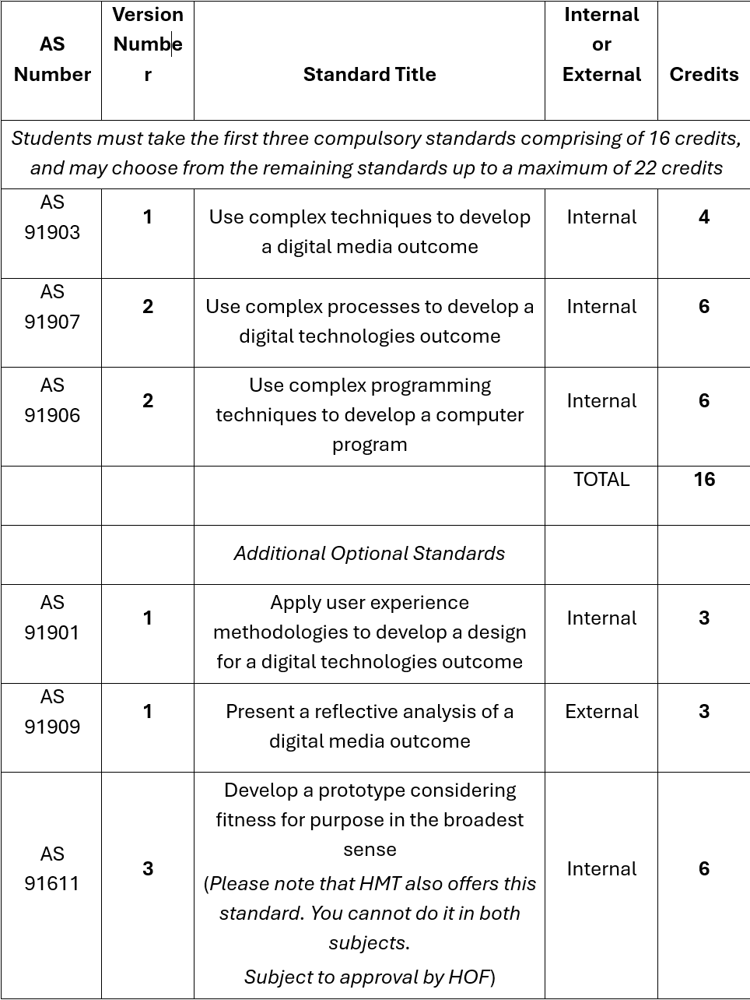

This course focuses on the processes and development of digital outcomes with a particular emphasis on project management using agile development. Ākonga will undertake the creation of a digital media outcome, such as a multimedia website or a video production for AS91903 with the option of pairing this with AS91901 where a client and stakeholders are worked with in order to develop a design for a digital technologies outcome. Ākonga will also undertake the development of a computer program such as an app or any other program that solves a problem.
SPECIAL NOTE: Students will be required to work on a BYOD laptop capable of running Adobe Creative Cloud (additional cost if required) and Microsoft Office 365 software for which student licenses will be available as part of the course fee. Depending on the project a student chooses to do, the device will also need to be capable of running Visual Studio Code and/or a game engine of the students' choosing.
There are a total of 22 credits available at Level 3 Digital Technologies, depending on chosen stream. 16 of these form the core course.
This course does not offer Course Endorsement as an option due to the timing of University Admissions panels focusing on Level 2 externals rather than Level 3
Some standards run concurrently
Please note:
This course does not offer reassessment opportunities
Single assessment opportunities only are available for all internal Achievement Standards offered.
Each standard will be assessed through assignments designed to allow you to meet the relevant AME criteria. There will not be a mid-year, but an optional end of year exam (end of year exam subject to approval if wanting to do it), although students will have the opportunity to complete assignment work during these times. Assessments will cover course content, personal application and reflection.
Please see the NCEA student guide - 2026 for all assessment matters related to the following:
School computers are no longer available during allocated periods, except for emergency purposes should a student laptop malfunction. If you are working on files on a laptop or other device, it is essential to have created cloud backups and to ensure that you have the latest version available during class sessions. All students must have earphones available for listening to tutorials as available during class.
Digital Technologies is an exciting field of growth in terms of both industry developments, as well as huge potential in the job market. How much you get out of this course will have a lot to do with how much you put in. This course requires a high degree of personal discipline with time management and planning in order for you to meet your academic goals. I will help in any way I can to make your year a success.

Many blessings for the coming year!
Mr. Lier
TIC Digital Technologies
Level 3 DGT Course outlines 2026 PDF:
Download